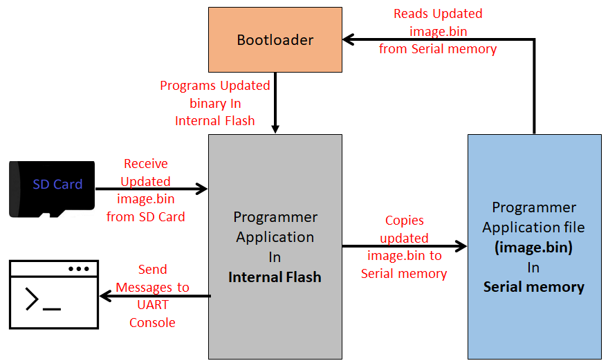

To clone or download these application from Github,go to the main page of this repository and then click Clone button to clone this repo or download as zip file. This content can also be download using content manager by following these instructions
FS QSPI Flash Bootloader
This example application shows how to use the File System Bootloader Library to bootload an application from QSPI Flash memory (SST26) to Internal Flash.
FS Serial Memory Bootloader Applications Block Diagram

Bootloader Application
- This is a File System based bootloader application which resides from
-
The starting location of the flash memory region for SAM devices
-
The starting location of the Boot flash memory region for PIC32MZ devices
- Uses a Custom linker script btl.ld to place it in Boot flash memory
-
-
It uses the Harmony 3 File System Framework to read the application binary (image.bin) stored in QSPI Flash Memory and program it into Internal flash memory
-
It glows an LED once bootloader firmware is running
- Trigger Methods
- It uses the On board Switch OR a GPIO pin as bootloader trigger pin to force enter the bootloader at reset of device
- It checks for bootloader request pattern (0x5048434D) from the starting 16 Bytes of RAM to force enter bootloader at reset of device
Programmer Application
- This is a File system based QSPI Flash programmer application which resides from
-
The end of bootloader size in device flash memory for SAM devices
-
The start of Program Flash memory for PIC32MZ devices
-
-
It will be loaded into internal flash memory from QSPI Flash Memory by bootloader application
- Uses the Virtual Com port of the device (EDBG port or External USB to UART converters) to send console messages
It Consist of three tasks
- SDCARD_Tasks():
- Receives the binary file image.bin to be copied into QSPI Flash from SD Card
- As the application running in internal flash should have capability to copy new binary file to QSPI Flash memory, we copy the programmer application binary itself in QSPI Flash Memory
- Prints copying status on UART console
- Receives the binary file image.bin to be copied into QSPI Flash from SD Card
- SERIAL_MEM_Tasks():
-
Formats the QSPI Flash memory to FAT File System if not formatted
-
Copies the binary file received by SDCARD_Tasks() to image.bin file in QSPI Flash Memory. The copied image.bin from QSPI Flash memory will be read by bootloader and programmed into internal flash
-
Prints messages on UART console
-
- APP_MONITOR_Tasks():
-
Blinks an LED every 1 second
-
Prints messages on UART console
-
Uses On board Switch OR a GPIO pin to trigger bootloader once copying of image binary to QSPI Flash memory is complete
-
Development Kits
The following table provides links to documentation on how to build and run File System based QSPI Flash bootloader on different development kits
| Development Kit |
|---|
| Curiosity PIC32MZ EF 2.0 Development Board |
| SAM E54 Xplained Pro Evaluation Kit |
| SAM E70 Xplained Ultra Evaluation Kit |